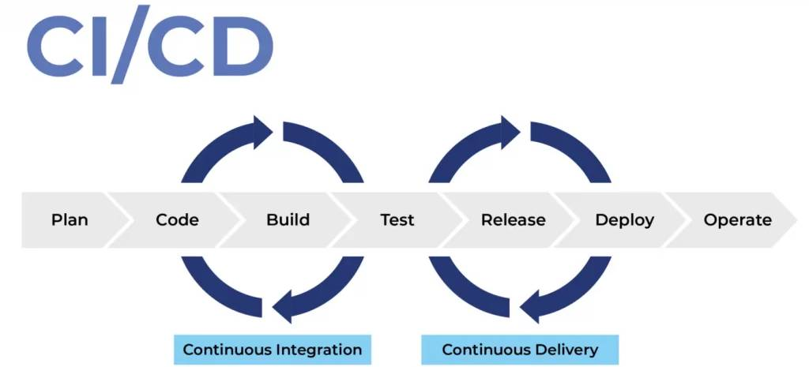

The CI/CD operations process
The CI/CD operations process
To gain a deeper understanding of how the CI/CD process works, one needs to grasp the specific steps involved. So what do these steps include, and how do they function?
- Continuous Integration (CI) is the first process, where developers frequently merge their code into a common repository such as Git, multiple times a day. Each merge is often automatically built and tested to detect errors as early as possible, minimizing bug accumulation and reducing the time needed to deliver high-quality products.
- Continuous Delivery (CD) extends CI by ensuring that you can release a new version of the software at any time. In CD, the processes of building, testing, and preparing code for release are automated.
- Continuous Deployment (CD) is a further step beyond CD, where tested changes to the code are automatically released into the production environment. This ensures that any change, once verified, can be deployed automatically.
The development lifecycle process along with the steps in CI/CD occur as follows:
- Build: Create products from the source code, integrate, and detect errors.
- Test: Automatically examine new features and changed code.
- Deliver: Move tested code to a test environment, which can be automatic or after human approval.
- Deploy: Implement changes to the product, automatically or according to human approval.
